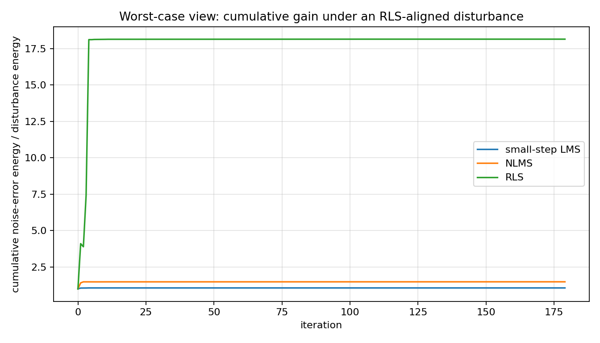
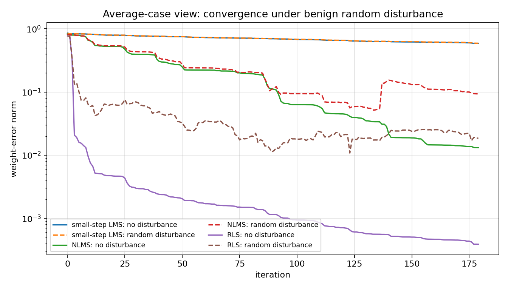
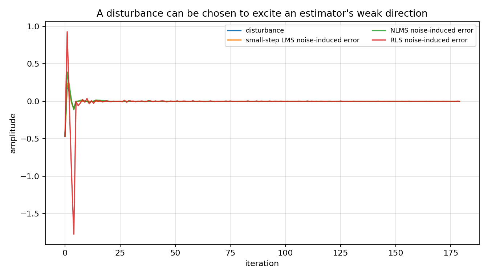

LMS through the H-infinity lens¶
Tutorial goal
Reproduce the qualitative message of Hassibi–Sayed–Kailath: LMS is not only crude least-squares descent; it also has a worst-case energy-gain interpretation.
Note
New to the terminology? See the lattice DSP concept map and the causality/data-use guide for how online, offline, block, and MIMO examples should be read.
Context¶
This flagship tutorial explains a historical surprise in adaptive filtering. The LMS idea goes back to Widrow and Hoff’s 1960 adaptive switching work. For more than three decades, it was often introduced as the inexpensive stochastic-gradient approximation to least squares, while RLS was the exact least-squares recursion. Hassibi, Sayed, and Kailath then showed that LMS also has a deterministic robust-filtering interpretation: with the right viewpoint, the algorithm is tied to an H-infinity minimax energy-gain problem rather than only to an average squared-error objective.
That historical angle is useful because it changes the way readers interpret a familiar algorithm. The script below does not try to reprint every derivation from the 1996 paper. Instead it builds a finite-horizon diagnostic that readers can inspect: for fixed regressors, the map from additive disturbance to prediction error is a linear operator. Its largest singular value exposes the disturbance direction that causes the largest error-energy amplification.
Key idea and equations¶
The adaptive filtering model is
where u_i is the regressor, w_* is the unknown vector, and v_i is a disturbance.
Least-squares thinking focuses on sums such as
The robust H-infinity diagnostic instead asks for a worst-case energy gain. In this tutorial we estimate, for each algorithm,
by forming the finite-horizon sensitivity matrix from disturbance samples to noise-induced prediction errors.
How to read the result¶
Read the first plot in the classical least-squares way: RLS converges fastest under benign random noise. Then read the gain plots in the minimax way: the same estimator can have a larger worst-case disturbance direction. That change of viewpoint is the lesson.
Run command¶
python examples/hinf_lms_reproduction.py
Run status¶
Return code: 0
Captured stdout¶
H-infinity-inspired LMS/RLS diagnostic
samples=180, order=4, noise_rms=0.04
algorithm worst gain random gain RLS-worst gain random tail MSE
----------------------------------------------------------------------------------
small-step LMS 2.568 1.052 1.064 3.016e-02
NLMS 15.040 1.539 1.486 3.900e-03
RLS 18.152 1.219 18.152 1.498e-03
Interpretation:
RLS usually converges fastest under benign random noise, but the sensitivity
matrix exposes directions where disturbance energy is amplified more strongly.
Small-step LMS is slower, yet its disturbance-to-error gain can be smaller.
This illustrates the Hassibi-Sayed-Kailath message: LMS can be understood
through a worst-case energy-gain lens, not only as crude least-squares descent.
Figures¶
{kind=link}

hinf_lms_cumulative_gain.png¶
{kind=link}

hinf_lms_random_convergence.png¶
{kind=link}

hinf_lms_worst_case_disturbance.png¶
Generated data files¶
Source code¶
1from __future__ import annotations
2
3import csv
4import os
5from dataclasses import dataclass
6from pathlib import Path
7
8import matplotlib.pyplot as plt
9import numpy as np
10
11
12@dataclass(frozen=True)
13class Algorithm:
14 name: str
15 kind: str
16 mu: float = 0.0
17 lam: float = 0.995
18 p0: float = 100.0
19 eps: float = 1e-6
20
21
22def artifact_dir() -> Path:
23 path = Path(os.environ.get("LATTICE_DSP_ARTIFACT_DIR", "reports/example-artifacts"))
24 path.mkdir(parents=True, exist_ok=True)
25 return path
26
27
28def make_regressors(n: int = 180, order: int = 4, seed: int = 12) -> np.ndarray:
29 rng = np.random.default_rng(seed)
30 x = rng.normal(size=n + order + 2)
31 for i in range(1, len(x)):
32 x[i] = 0.92 * x[i - 1] + 0.45 * x[i]
33 u = np.zeros((n, order), dtype=float)
34 for i in range(n):
35 u[i] = x[i + order - 1 : i - 1 : -1] if i > 0 else x[order - 1 :: -1]
36 return u / np.sqrt(np.mean(u * u))
37
38
39def run_adaptive(u: np.ndarray, w_true: np.ndarray, disturbance: np.ndarray, alg: Algorithm) -> dict[str, np.ndarray]:
40 n, p = u.shape
41 w = np.zeros(p, dtype=float)
42 P = alg.p0 * np.eye(p)
43
44 pred_error = np.zeros(n)
45 posterior_error = np.zeros(n)
46 weight_error = np.zeros(n)
47 weights = np.zeros((n, p))
48
49 for i, ui in enumerate(u):
50 d = float(ui @ w_true + disturbance[i])
51 e = d - float(ui @ w)
52 pred_error[i] = e
53
54 if alg.kind == "lms":
55 w = w + alg.mu * ui * e
56 elif alg.kind == "nlms":
57 w = w + (alg.mu / (alg.eps + float(ui @ ui))) * ui * e
58 elif alg.kind == "rls":
59 Pu = P @ ui
60 gain = Pu / (alg.lam + float(ui @ Pu))
61 w = w + gain * e
62 P = (P - np.outer(gain, ui) @ P) / alg.lam
63 P = 0.5 * (P + P.T)
64 else:
65 raise ValueError(f"Unknown algorithm kind: {alg.kind}")
66
67 posterior_error[i] = d - float(ui @ w)
68 weight_error[i] = np.linalg.norm(w - w_true)
69 weights[i] = w
70
71 return {
72 "prediction_error": pred_error,
73 "posterior_error": posterior_error,
74 "weight_error": weight_error,
75 "weights": weights,
76 }
77
78
79def sensitivity_matrix(u: np.ndarray, w_true: np.ndarray, alg: Algorithm, *, output: str) -> tuple[np.ndarray, float, np.ndarray]:
80 n = u.shape[0]
81 zero = np.zeros(n)
82 base = run_adaptive(u, w_true, zero, alg)[output]
83 M = np.zeros((n, n), dtype=float)
84 for j in range(n):
85 impulse = np.zeros(n)
86 impulse[j] = 1.0
87 response = run_adaptive(u, w_true, impulse, alg)[output]
88 M[:, j] = response - base
89 U, S, Vt = np.linalg.svd(M, full_matrices=False)
90 return M, float(S[0] ** 2), Vt[0]
91
92
93def cumulative_gain(noise_error: np.ndarray, disturbance: np.ndarray) -> np.ndarray:
94 num = np.cumsum(noise_error * noise_error)
95 den = np.cumsum(disturbance * disturbance) + 1e-30
96 return num / den
97
98
99def main() -> None:
100 out_dir = artifact_dir()
101 rng = np.random.default_rng(4)
102
103 n = 180
104 order = 4
105 u = make_regressors(n=n, order=order)
106 w_true = np.array([0.70, -0.42, 0.25, -0.12])
107 noise_rms = 0.04
108
109 algorithms = [
110 Algorithm("small-step LMS", "lms", mu=0.020),
111 Algorithm("NLMS", "nlms", mu=0.25),
112 Algorithm("RLS", "rls", lam=0.995, p0=100.0),
113 ]
114
115 random_disturbance = noise_rms * rng.normal(size=n)
116
117 sensitivity: dict[str, dict[str, object]] = {}
118 for alg in algorithms:
119 M, gain, v_unit = sensitivity_matrix(u, w_true, alg, output="prediction_error")
120 sensitivity[alg.name] = {"matrix": M, "gain": gain, "v_unit": v_unit}
121
122 # Worst-case disturbance for the RLS prediction-error map. Scale it to the same
123 # energy as a length-n Gaussian sequence with RMS = noise_rms.
124 rls_worst_unit = np.asarray(sensitivity["RLS"]["v_unit"], dtype=float)
125 rls_worst_disturbance = noise_rms * np.sqrt(n) * rls_worst_unit
126
127 zero = np.zeros(n)
128 rows = []
129 trajectories: dict[str, dict[str, dict[str, np.ndarray]]] = {}
130
131 for alg in algorithms:
132 clean = run_adaptive(u, w_true, zero, alg)
133 random_run = run_adaptive(u, w_true, random_disturbance, alg)
134 worst_run = run_adaptive(u, w_true, rls_worst_disturbance, alg)
135
136 random_noise_error = random_run["prediction_error"] - clean["prediction_error"]
137 worst_noise_error = worst_run["prediction_error"] - clean["prediction_error"]
138
139 rows.append(
140 {
141 "algorithm": alg.name,
142 "mu_or_lambda": alg.mu if alg.kind != "rls" else alg.lam,
143 "operator_worst_case_gain": float(sensitivity[alg.name]["gain"]),
144 "random_noise_gain": float(
145 np.sum(random_noise_error**2) / (np.sum(random_disturbance**2) + 1e-30)
146 ),
147 "rls_worst_disturbance_gain": float(
148 np.sum(worst_noise_error**2) / (np.sum(rls_worst_disturbance**2) + 1e-30)
149 ),
150 "clean_final_weight_error": float(clean["weight_error"][-1]),
151 "random_final_weight_error": float(random_run["weight_error"][-1]),
152 "rls_worst_final_weight_error": float(worst_run["weight_error"][-1]),
153 "random_tail_mse": float(np.mean(random_run["prediction_error"][-50:] ** 2)),
154 "rls_worst_tail_mse": float(np.mean(worst_run["prediction_error"][-50:] ** 2)),
155 }
156 )
157 trajectories[alg.name] = {"clean": clean, "random": random_run, "rls_worst": worst_run}
158
159 csv_path = out_dir / "hinf_lms_summary.csv"
160 with csv_path.open("w", newline="", encoding="utf-8") as f:
161 writer = csv.DictWriter(f, fieldnames=list(rows[0].keys()))
162 writer.writeheader()
163 writer.writerows(rows)
164
165 t = np.arange(n)
166
167 fig, ax = plt.subplots(figsize=(8.4, 4.8))
168 for alg in algorithms:
169 ax.semilogy(t, trajectories[alg.name]["clean"]["weight_error"], label=f"{alg.name}: no disturbance")
170 ax.semilogy(t, trajectories[alg.name]["random"]["weight_error"], linestyle="--", label=f"{alg.name}: random disturbance")
171 ax.set_title("Average-case view: convergence under benign random disturbance")
172 ax.set_xlabel("iteration")
173 ax.set_ylabel("weight-error norm")
174 ax.grid(True, alpha=0.35)
175 ax.legend(ncol=2, fontsize=8)
176 fig.tight_layout()
177 convergence_path = out_dir / "hinf_lms_random_convergence.png"
178 fig.savefig(convergence_path, dpi=160)
179 plt.close(fig)
180
181 fig, ax = plt.subplots(figsize=(8.4, 4.8))
182 for alg in algorithms:
183 clean = trajectories[alg.name]["clean"]
184 worst = trajectories[alg.name]["rls_worst"]
185 noise_error = worst["prediction_error"] - clean["prediction_error"]
186 ax.plot(t, cumulative_gain(noise_error, rls_worst_disturbance), label=alg.name)
187 ax.set_title("Worst-case view: cumulative gain under an RLS-aligned disturbance")
188 ax.set_xlabel("iteration")
189 ax.set_ylabel("cumulative noise-error energy / disturbance energy")
190 ax.grid(True, alpha=0.35)
191 ax.legend()
192 fig.tight_layout()
193 gain_path = out_dir / "hinf_lms_cumulative_gain.png"
194 fig.savefig(gain_path, dpi=160)
195 plt.close(fig)
196
197 fig, ax = plt.subplots(figsize=(8.4, 4.8))
198 ax.plot(t, rls_worst_disturbance, label="disturbance")
199 for alg in algorithms:
200 clean = trajectories[alg.name]["clean"]
201 worst = trajectories[alg.name]["rls_worst"]
202 noise_error = worst["prediction_error"] - clean["prediction_error"]
203 ax.plot(t, noise_error, label=f"{alg.name} noise-induced error", alpha=0.85)
204 ax.set_title("A disturbance can be chosen to excite an estimator's weak direction")
205 ax.set_xlabel("iteration")
206 ax.set_ylabel("amplitude")
207 ax.grid(True, alpha=0.35)
208 ax.legend(fontsize=8, ncol=2)
209 fig.tight_layout()
210 disturbance_path = out_dir / "hinf_lms_worst_case_disturbance.png"
211 fig.savefig(disturbance_path, dpi=160)
212 plt.close(fig)
213
214 print("H-infinity-inspired LMS/RLS diagnostic")
215 print(f"samples={n}, order={order}, noise_rms={noise_rms}")
216 print()
217 print(f"{'algorithm':18s} {'worst gain':>12s} {'random gain':>12s} {'RLS-worst gain':>15s} {'random tail MSE':>16s}")
218 print("-" * 82)
219 for row in rows:
220 print(
221 f"{row['algorithm']:18s} "
222 f"{row['operator_worst_case_gain']:12.3f} "
223 f"{row['random_noise_gain']:12.3f} "
224 f"{row['rls_worst_disturbance_gain']:15.3f} "
225 f"{row['random_tail_mse']:16.3e}"
226 )
227 print()
228 print("Interpretation:")
229 print(" RLS usually converges fastest under benign random noise, but the sensitivity")
230 print(" matrix exposes directions where disturbance energy is amplified more strongly.")
231 print(" Small-step LMS is slower, yet its disturbance-to-error gain can be smaller.")
232 print(" This illustrates the Hassibi-Sayed-Kailath message: LMS can be understood")
233 print(" through a worst-case energy-gain lens, not only as crude least-squares descent.")
234 print()
235 print(f"Wrote {convergence_path}")
236 print(f"Wrote {gain_path}")
237 print(f"Wrote {disturbance_path}")
238 print(f"Wrote {csv_path}")
239
240
241if __name__ == "__main__":
242 main()